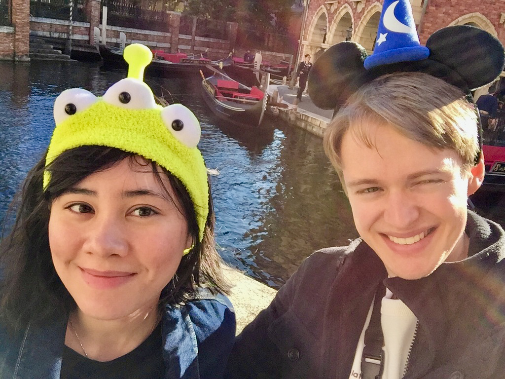
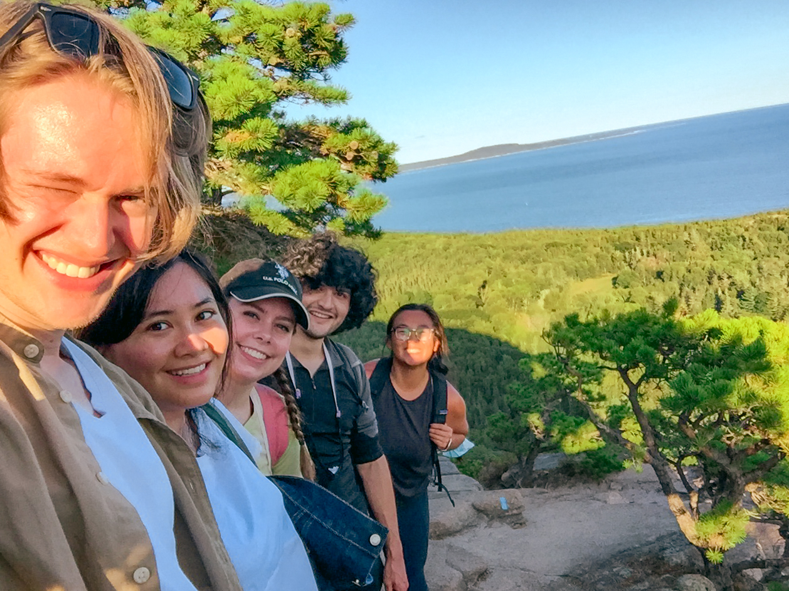

Year Nine
︵‿︵‿୨♡୧‿︵‿︵
2019 to 2020

In January 2020, Marcie and I took a two-week trip to Japan, where we both got very sick. Marcie said that Japanese food had no flavor, and she wondered why the whole country smelled like burned coffee. Brian coughed until he doubled over, and he sweated through the nights. What a bad cold we caught! After the world shut down for COVID-19 in March, we spent the quarantine months inside our tiny studio apartment. We perfected can-based recipes and practiced kickboxing. I wrote a novel. She made two films, one of which I like much more than the other. In August, we finally escaped with our friends to the wide-open world of Acadia National Park.
︵‿︵‿୨♡୧‿︵‿︵
Japan

This photo was taken hours before Marcie thoughtlessly infected an innocent victim: me.

Disaster strikes, but I look to the future with my usual sunny optimism and can-do attitude.

Marcie visits her closest living relatives at Iwatayama Monkey Park in Kyoto.
ML: Sorry to my guests for this grave insult.

We walked through the forest to Kasuga Shrine in Nara.

Marcie and I share a traditional Japanese breakfast of chocolate pancakes and whipped cream.
I ascend

On the penultimate day of our trip, we’ve beaten jetlag and sickness. Finally, we look like human beings.


We spend our last day in Japan at Tokyo DisneySea
Fate may batter us with arbitrary blows, but it will never take away our love of funny little hats
︵‿︵‿୨♡୧‿︵‿︵
COVID Quarantine in NYC

Can you spot the ten things that don’t belong? (A sobering glimpse into a culture that was clapping out the window every night)
March 2020: a happy, handsome young man, normal and properly socialized

December 2020: a man driven to the brink, savage, hideous, barely human
︵‿︵‿୨♡୧‿︵‿︵
Maine

Brian, his arms wide

The love of my life poses with a red crustacean dragged from the depths of the Atlantic, Marcie LaCerte

Marcie scales a ladder on the Beehive Trail in Acadia National Park
We reach the top of the Beehive Trail with our friends

I’ll never forget what Marcie said before I took this picture: “There is one knows not what sweet mystery about this sea, whose gently awful stirrings seem to speak of some hidden soul beneath; like those fabled undulations of the Ephesian sod over the buried Evangelist St. John. And meet it is, that over these sea-pastures, wide-rolling watery prairies and Potters’ Fields of all four continents, the waves should rise and fall, and ebb and flow unceasingly; for here, millions of mixed shades and shadows, drowned dreams, somnambulisms, reveries; all that we call lives and souls, lie dreaming, dreaming, still; tossing like slumberers in their beds; the ever-rolling waves but made so by their restlessness.”